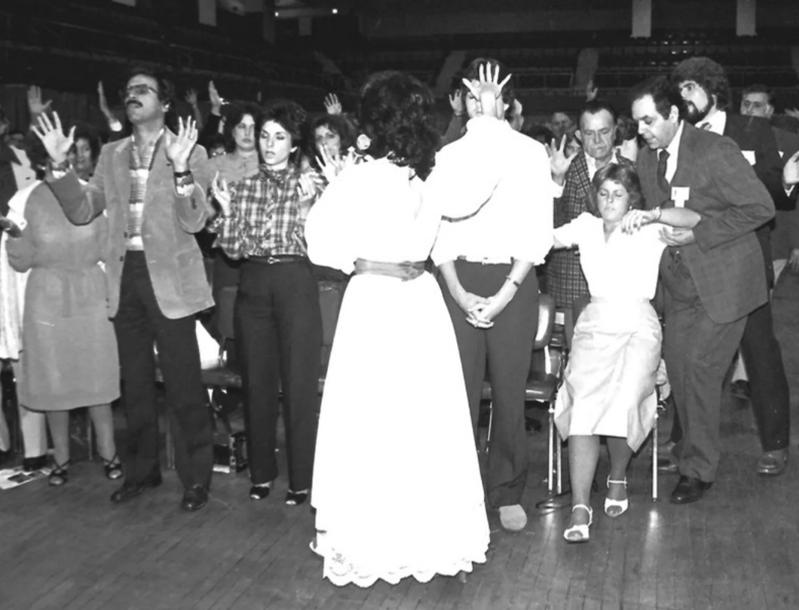

Between diagnosis and deliverance, reality begins to blur.



When healing becomes spectacle, what does it cost to believe?

Feature · In Development
A woman and her grandchildren chase salvation across upstate New York, summer 1993.
Between diagnosis and deliverance, reality begins to blur.
When healing becomes spectacle, what does it cost to believe?